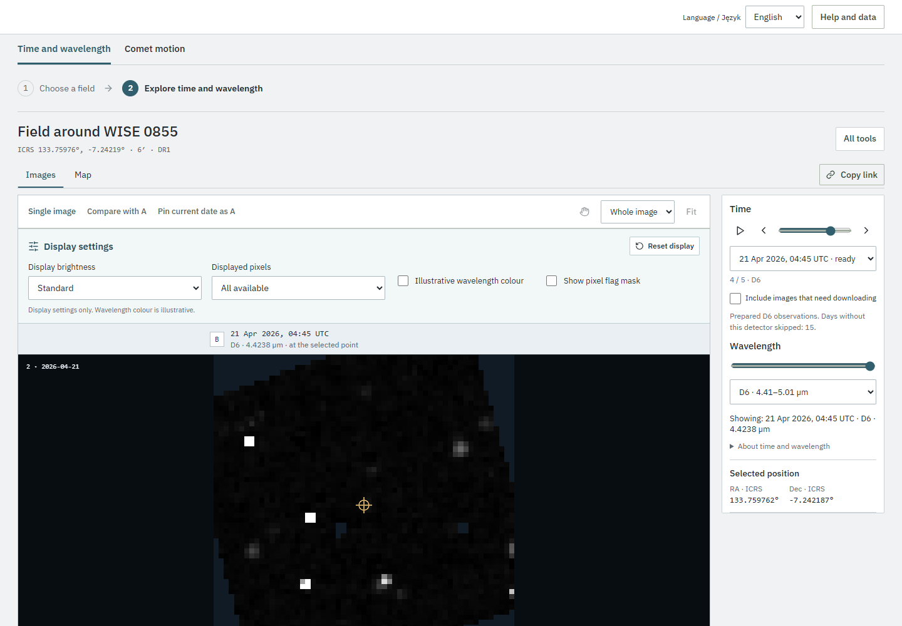

← Projects and work
SPHEREx Sky Explorer
The same sky field across observation times and infrared detector ranges.
An independent NASA Space Apps prototype for SPHEREx observations from IRSA. React and FastAPI prepare FITS images and comparison views.

Implementation
- Compare actual exposures across time and wavelength, with local wavelengths and missing coverage marked.
- The backend searches IRSA, prepares FITS and retains archive URLs and file checksums.
- Prepared images are cached; new fields require archive access. Aladin Lite provides the sky map.
Verification
Prepared fields include WISE 0855 (time), Barnard’s Star (wavelengths) and 3I/ATLAS (comet motion). View settings can be saved in a link.
Limitations
Appearance depends on time, local wavelength, background and PSF. Comparisons do not establish variability, precise motion or a discovery. The sky map combines many dates. This independent project does not imply NASA endorsement.